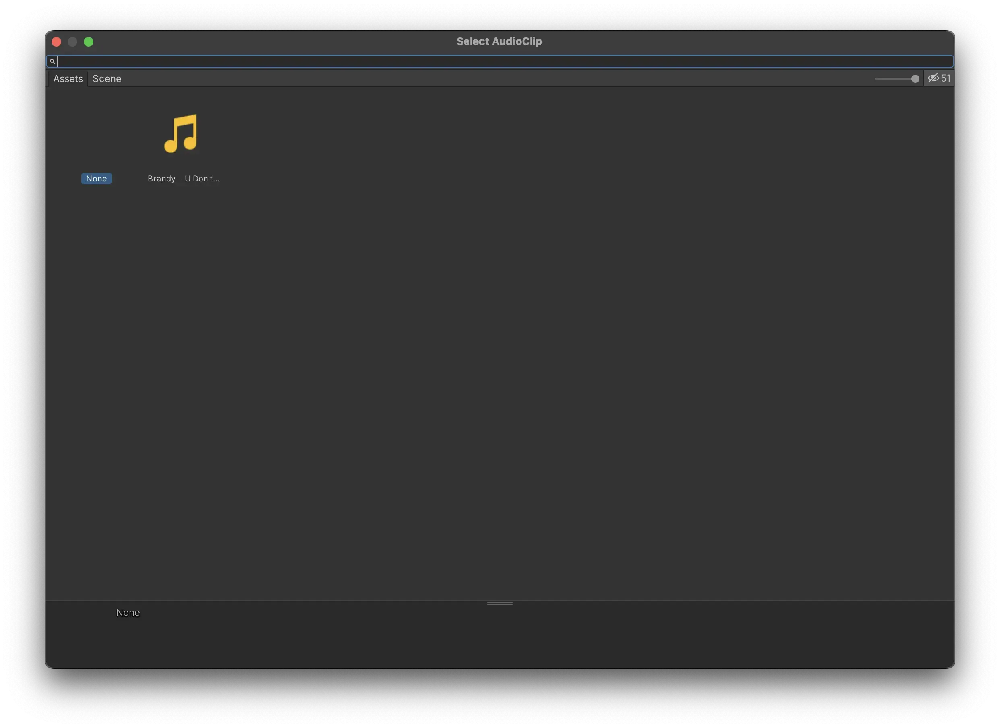
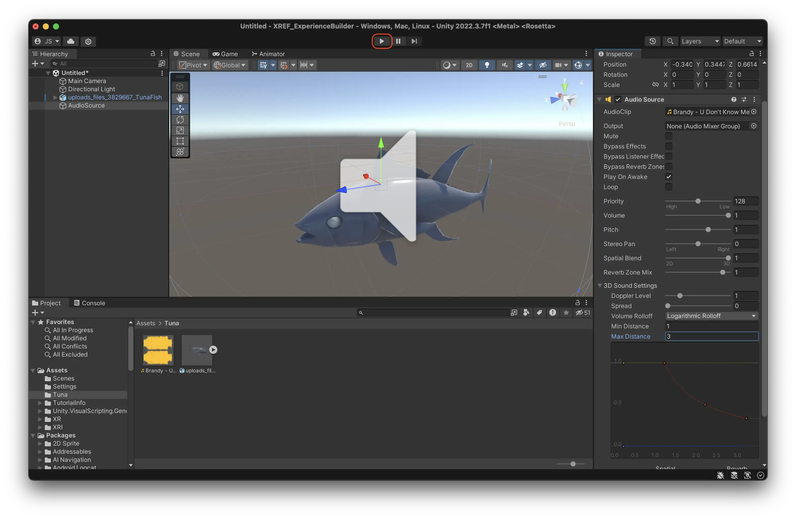

Create your first experience
To get a grasp of how the Unity editor works we will create a simple experience with a flying creature emitting a sound.
Find your model
Unity is not a modelling tool, you need to create your models elsewhere and import them. However, you don’t need to create your model yourself.
There are tons of good sites for finding 3D models, both free and paid.
Good 3D model marketplaces
Turbosquid, the Marks & Spencer of 3D models. High quality but sometimes expensive. https://www.turbosquid.com/

CGTrader, the Lidl of 3D models. Affordable and with a great selection, but there’s a lot of crap as well. https://www.cgtrader.com/
GrabCAD Library, the thrift shop of 3D models. Here you can find anything from ugly vases to accurate egnineering models of the ISS. https://grabcad.com/library
Fileformats
Standard 3D model formats for Unity is OBJ and FBX, while certain others can be used as well.
OBJ: a great format for static models.
FBX: can contain animations, and is the most common format for game development.
In most 3D market places you can toggle search results by file format.
Let’s find a model
- Go to https://www.cgtrader.com/
- Create an account (unfortunately required.)
- Search for something, like dragon, butterfly or tuna
- Toggle ‘Free’ and set Formats to Autodesk FBX
- Press ‘Download’
- You need to wait 20 seconds for some stupid reason
- Unzip it.
Here is a link to a free Tuna model
Import your model into Unity
- Create a new folder in your Project Window by right clicking in the empty area of the window, choosing Create -> Folder.
- Give it the name of your project, or what ever makes sense in your context.
- Double click the folder to enter it.
- Drag and drop it from Finder (or Explorer) into your empty folder in Unity.
- You should now see your downloaded model inside the project window.
Add the object to your scene.
- Drag and drop it from your folder in the project window to the hierarchy to place it in the scene.
- You should now see the 3D model in your scene.
- Check the size of the model. Sometimes 3D models imported into Unity have very different scale. Unity’s default unit is meters, so if the object is modelled in millimeters it will be larger than it should.
- An easy way to check the size is to create a default cube in the scene. Those are always 1x1x1 meters.
- Right click in the Hierarchy and select 3D Object > Cube to create a cube.
- You can see that the Tuna is a realistic scale. However, it might be a bit large to see in AR. Let’s make it half the size for clarity.
- Select the model in the Hierarchy and find the Transform component in the Inspector.
- Change the scale to 0.5 on all axises. (Tip: toggle the little chain icon to the left of the scale to keep the proportions.)
- Delete the Cube, as we don’t need it anymore. Select it and press cmd + delete (ctrl + delete on Windows.)
Add an audioclip
Unity works with most common audio formats, like WAV and MP3. Unity will compress all audio when building an experience. For experiences where audio is essential you want to avoid double-compression, so then a lossless format like WAV is preferable.
- Find an audioclip you would like to use, and import it to your project folder in the same way as you did with the 3D model.
- Create an Audio Source. An Audio Source is a virtual speaker in space.
- In your Hiearchy, right click and select ‘Create Empty’. This creates an empty gameobject, which is a type of entity that doesn’t exist in the real world; an object with nothing but a position, rotation, and scale.
- Name it ‘AudioSource’ or something similar, so that you can keep track of it.
- Select the ‘AudioSource’ object.
- In the Inspector, press Add Component.
- Search for Audio Source and press it.
- Now you have added an AudioSource component to your empty object.
- In the little slot for AudioClip, press the circle to the left.
- Double click the audio clip you imported to Unity earlier to the audio source. 
- Change the Spatial Blend of the AudioSource to 3D to turn it into 3D sound, ie sound that gets lower the further you go from it.
- In 3D Sound Settings, change the Max Distance to e.g 3 meters, so it will be easier to perceive the difference.
- Your AudioSource should now look like this.
Play your scene to test it.
- Press the big play button in the top. Unity will load for a while. 
- Select the Camera.
- Move the Camera around with the arrows. You should hear the sound get louder as you approach your 3D model, and lower as you go away from it.
- DON’T FORGET TO UNPLAY! When in Play Mode, no changes to your scene are saved. It is very easy to forget this.
Add an animation to your model.
If you want a model with animations, add the search parameter ‘Animated’ on any of the 3D market places. The Tuna fish used above has an animation in the model.
- You can see if the model has imported animations correctly by selecting the model in the Project window, and then looking in the animation tab in the inspector. If there are animations you can play them there to see how they look.
- Continuing soon…
Save your scene
Remember to save your scene when you are done, so you don’t loose your work. Most things you do in Unity is saved automatically as you are working directly towards the project folder. However, the scene is not saved automatically. Any arrangement of objects, audiosources and tuna fishes that you have made in your scene need to be saved.